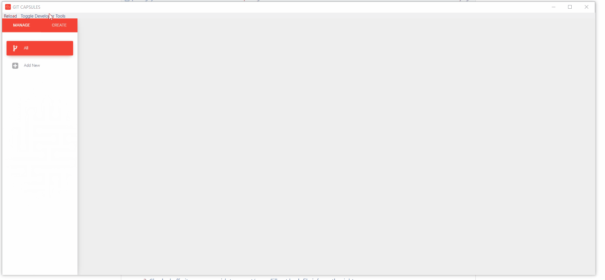
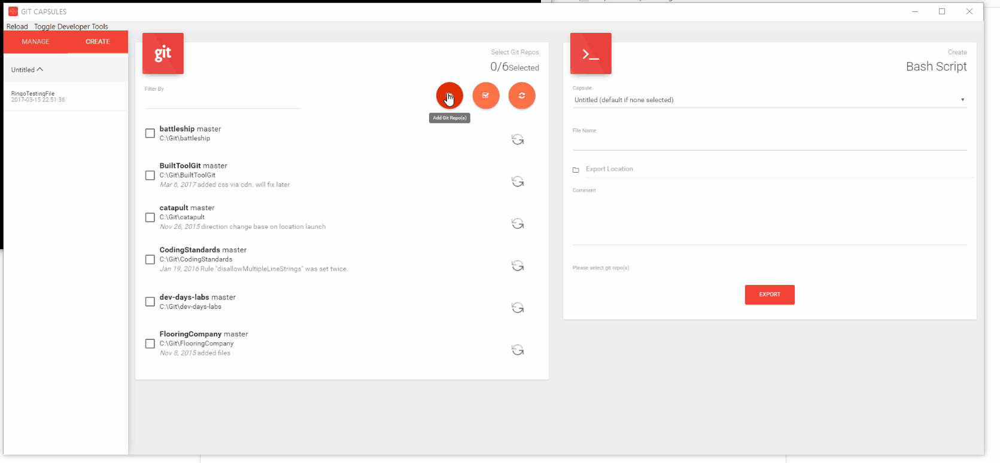
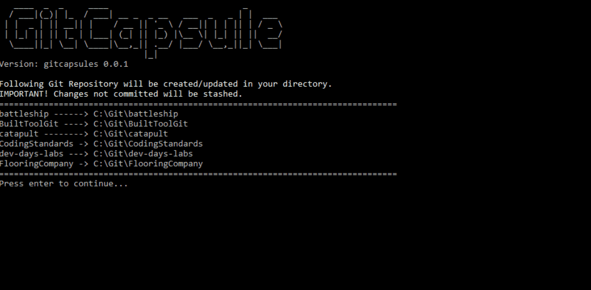
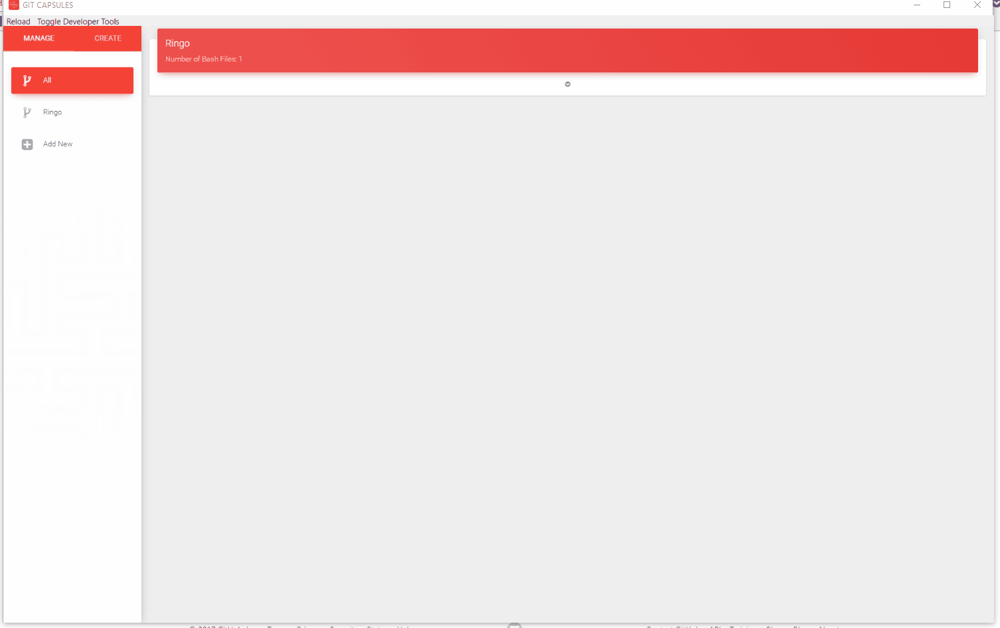

Click create and select your git projects directory. It can be a root directory of all your git repos or just 1. Git Capsules will retrieve all valid git repos with [Remote Origin] and display on screen with folder name and current commit.

Select the git repos you wish to export/save. Checked off commit will be included in bash script. Fill out the bash script info form.
- Capsules (dropdown) Collection of repos. If no repos are selected, app would not save a record.
- Filename (textfield) Name of Bash File.
- ExportLocation (dialog) export location of bash file. Comment(textarea) Optional, comment will display when user open bash script.

Open bash file. Press enter. wola! Bash will...
- Clone (if repo doesnt exist)
- Stash your local changes (if repo exist)
- Checkout the commit you specified in the app.
- A report will be generated at the end.
